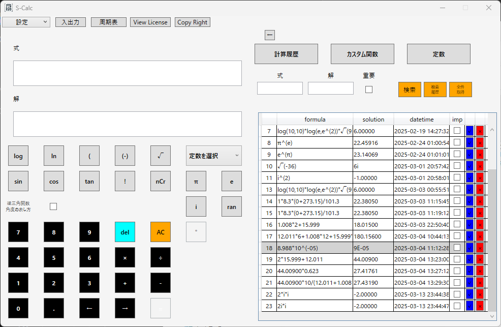

S-Calcの活用シーン

科学研究でのS-Calc活用
科学研究において、計算の精度と効率は研究成果を大きく左右します。
S-Calcは、化学・物理・生物学などの研究者にとって、より正確で高速な計算を支援する高機能関数電卓です。
実験データの解析や公式計算をスムーズに行い、計算ミスを削減し、作業時間を短縮できます。
| 研究分野 | 使用用途 |
|---|---|
| 化学研究 | 濃度計算、反応速度解析、pH計算 |
| 物理研究 | 力学計算、電磁気学の数値計算、流体力学シミュレーション |
| 生物統計 | 統計解析、標本サイズ計算、生存分析 |
エンジニアリング分野での利用
エンジニアが日常的に扱う計算は、複雑で時間がかかるものが多くあります
S-Calcは、エンジニアリング向けのカスタム関数機能や計算履歴機能を活用し、機械設計・電子回路設計・建築構造計算などの作業を効率化します。
| エンジニアリング分野 | 計算用途 |
|---|---|
| 機械設計 | 材料応力、モーメント計算、回転体の慣性計算 |
| 電子回路設計 | 抵抗値・コンデンサ容量計算、電流・電圧の解析 |
| 建築・土木 | 耐震計算、梁の応力計算、配筋計算 |
教育用途（学生・教師向け）
数学・物理・化学を学ぶ学生にとって、関数電卓は欠かせません。S-Calcは、高度な関数計算を可能にするWindows向けの電卓ソフトです。
教師が授業で活用する際にも、履歴機能を使って計算過程を確認できるため、教育支援ツールとしても最適です。
| 学科 | 活用例 |
|---|---|
| 数学 | 方程式の解法、関数グラフの解析 |
| 物理 | 運動方程式、電磁波計算 |
| 化学 | 分子量計算、酸塩基平衡 |
S-Calcの主な特徴
計算履歴の保存機能
S-Calcでは、過去の計算履歴を保存し、後で簡単に参照・再利用することが可能です。
この機能により、「以前の計算をやり直したい」「間違いがないか確認したい」といった場面で役立ちます。
カスタム関数の登録と活用
エンジニアや研究者が扱う複雑な数式を、カスタム関数として登録できます。
一度登録すれば、繰り返し利用でき、計算ミスのリスクを減らし、作業効率を向上させます。
物理定数・数学定数の管理
S-Calcでは、物理学・数学でよく使う定数を登録することができます。
例えば、光速・プランク定数・重力加速度など、頻繁に利用する定数を即座に呼び出せます。
他の関数電卓ソフトとの比較
Windows標準電卓との違い
| 機能 | S-Calc | Windows電卓 |
|---|---|---|
| 計算履歴 | ✅ 保存可能 | ❌ 履歴なし |
| カスタム関数 | ✅ 関数登録・再利用OK | ❌ 関数のカスタマイズ不可 |
| 定数管理 | ✅ 登録・共有可能 | ❌ 定数の保存なし |
価格・購入方法
S-Calcの価格とライセンス形態
S-Calcは8,800円（税込）で提供しております。
また、試用版をご利用いただけるため、購入前に機能を確認できます。
🚀 S-Calc を今すぐ手に入れる！試用版と製品版の違い
| 機能 | 製品版 | 試用版 |
|---|---|---|
| 計算履歴 | ✅ 利用可能 | ❌ 利用不可 |
| カスタム関数登録 | ✅ 利用可能 | ❌ 利用不可 |
| 定数管理 | ✅ 利用可能 | ❌ 利用不可 |